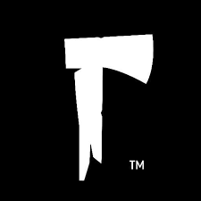

Hinterland Studio — независимая компания разработчиков видеоигр, основанная в 2012 году. Они специализируются на создании атмосферных и исследовательских игр с акцентом на выживании и приключениях. Наиболее известным проектом Hinterland Studio является игра The Long Dark — симулятор выживания в постапокалиптическом мире, где игроки сталкиваются с экстремальными погодными условиями, охотой на животных, поиском ресурсов и борьбой за выживание. Игра получила признание благодаря своей атмосфере, глубокой игровой механике и уникальному стилю визуального оформления.
The Long Dark (с англ. — «Долгая тьма») — компьютерная игра в жанре симулятора выживания с видом от первого лица с элементами открытого мира, являющаяся дебютным проектом Hinterland Studio Inc, сформированной в 2014 году Рафаэлем ван Лиропом. Альфа-версия игры вышла 22 сентября 2014 в рамках раннего доступа в Steam. Разработчики получили финансирование на разработку игры за счёт кампании на Kickstarter в октябре 2013 года. The Long Dark является дебютным проектом команды Hinterland Studio. Релиз состоялся 1 августа 2017 года.
The Long Dark — это симулятор выживания от первого лица c открытым миром в сеттинге зимней северной природы. Мороз, нехватка еды и воды, пронизывающий ветер — действие игры разворачивается на одном из островов северной Канады после крушения самолёта в условиях неизвестной глобальной катастрофы. Всё это делает The Long Dark крайне суровой игрой. Целью игры является выживание в течение максимального количества времени. Игра включает в себя элементы симулятора: присутствуют показатели температуры тела, количества калорий, степень насыщения/голода, усталость.

Значки подвигов выдаются за выполнение определенных действий в игре. Получив значок подвига, игрок может активировать его при старте новой игры и получить соответствующий бонус. Персонаж может использовать бонусы только начав новое выживание.
Подвиги можно использовать только в режиме выживания, и для каждого уровня сложности количество активных подвигов свое: для сложности Пилигрим и режима Персонализации это 5 активных подвигов, для Скитальца — 4, сталкера — 3, а для Незваного гостя всего 2. В режиме Страданий значки подвигов нельзя использовать вовсе.
Отрезанный перевал - единственная локация, где реализована высотная поясность: в нижней части локации температуры относительно комфортные для проживания, однако высоко в горах становится в среднем на 10 градусов холоднее, также заметно редеют лес и съедобная растительность. В локации постоянно дует ветер: от него можно укрыться в низинах, но на возвышенностях он приносит серьёзные проблемы.
Постройки малочисленны и представлены в основном маленькими домиками. Большая часть открытой для исследования области занята лесами в низинах и наполненными волками и лесными волками пустошами на возвышенностях. Главная достопримечательность локации — Метеостанция, расположенная на скале в центре локации.
| Название | Калорийность | Портится % в день | Внутри | Снаружи | Где хранить |
|---|---|---|---|---|
| Армейский ИРП | 1750 | 0.056 | 0.028 | Снаружи |
| Кижуч (рыба) | до 1500 | 1.25 | 12.5 | Снаружи |
| Арахисовая паста | 900 | 1 | 0.5 | Снаружи |
| Домашний суп (Режим истории) | 600 | 20 | 5 | Снаружи |
| Мясо медведя | 900 | 8.333 | 0.833 | Снаружи |
| Кленовый сироп | 850 | 1 | 0.5 | Снаружи |
| Банка сгущёнки | 600 | 0.133 | 0.667 | Снаружи |
| Банка свинины с фасолью | 750 | 1 | 0.25 | Внутри |
| Солёный крекер | 750 | Не портится! | ||
| Энергетический батончик | 500 | 0.833 | 0.417 | Снаружи |
| Банка персиков | 450 | 0.333 | 1.667 | Внутри |